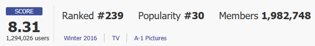
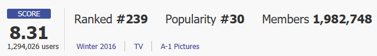

애니메이션 2016 22분•12부작 - 15세 관람가
 

[MyAnimeList] 평점
2014, 2015년 일본 만화대상 연속 수상작!
‘과거’와 ‘현재’가 교차하는 시공간 서스펜스!
지지리도 안 풀리는 현실 속에서 하루하루 조바심만 더해가던 청년 사토루.
자신에게만 일어나는 ‘시간이 되돌아간다’는 불가사의한 '리바이벌' 현상조차 그의 불만을 더욱 크게 만들 뿐이었다.……
하지만 그것은 어느 날을 기점으로 달라졌다.뜻밖의 거대한 사건들이 청년의 주변을 다짜고짜 변화시켜 간다.
‘같은 반 소녀의 죽음’, ‘연쇄 유괴살인사건’‘구하지 못한 친구’, ‘범인의 정체…….’
‘과거’에 일어난 사건과 마주할 때,사토루의 ‘현재’가 움직이기 시작한다……!
만화 애니메이션과 영화계를 강타할 2016년 상반기 최고의 타임리프 미스터리 화제작!!
OTT
 티빙
티빙
 왓챠
왓챠
 웨이브
웨이브